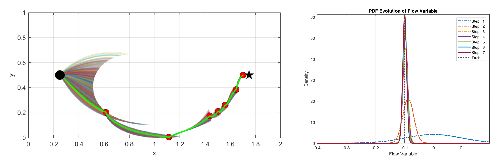
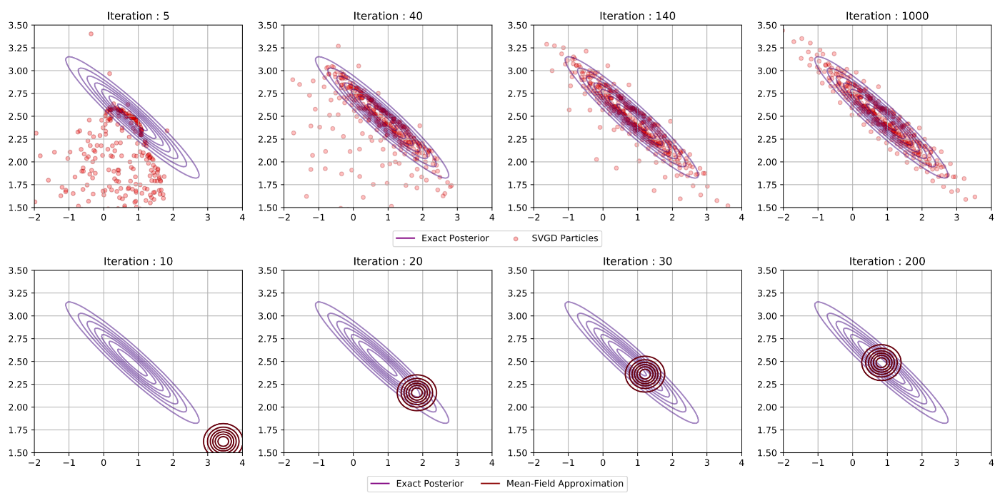
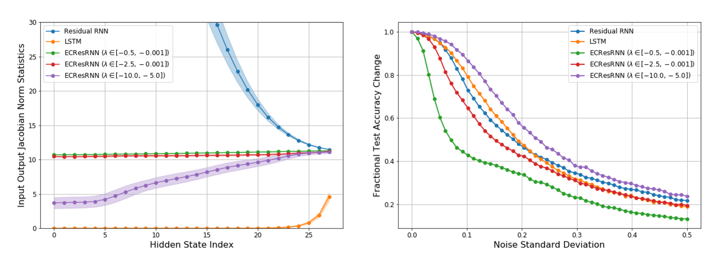
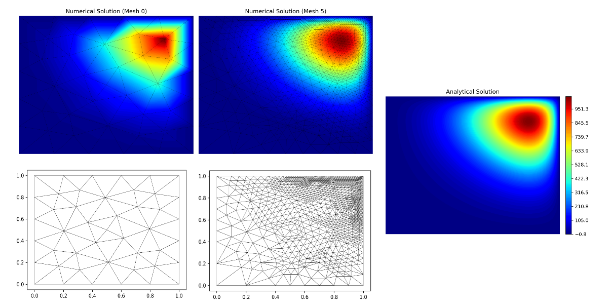
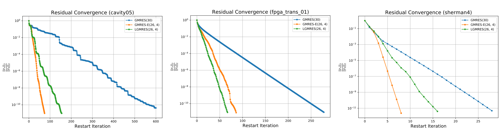

Projects¶
This section contains some of my class and personal projects that fall under the following broad fields:
- Uncertainty Quantification and Inference
- Machine Learning
- Numerical Methods and Numerical Differential Equations.
Uncertainty Quantification and Inference¶
Data Assimilative Path Planning¶

A key challenge in path planning for autonomous underwater and surface vehicles is navigating in ocean environments that are highly uncertain. Users will rarely have accurate information and forecasts of ocean currents and velocity fields (which have a non-negligible influence on the vehicle). As part of the class 16.S498 (Risk Aware and Robust Nonlinear Planning), I investigated (in a team of two) the task of path planning in these uncertain environments and how to incorporate data assimilation into the general path planning framework. By using measurements collected by the vehicle, we looked at how (using Bayesian filtering) this data could be used to reduce the overall uncertainty in the environment as well as update the vehicle path to allow for it to navigate both safely and quickly to the target.
The figure above shows a sample result from the proposed algorithm for a simple case of navigating in an uncertain flow field parametrized by a single random variable. Left subfigure: The possible paths taken by the vehicle for a fixed sequence of controls over short time intervals results in large uncertainty at the beginning which progressively collapses as environmental uncertainty is reduced from measurements and collected data. Right subfigure: The evolution of the pdf of the random flow variable (as desired, we converge to the true value as more data is collected).
Check out the full project report at this link -->
Variational Methods for Bayesian Inference¶

A central task in Bayesian inference is the ability to accurately approximate and sample from the posterior distribution. As part of the class 16.940 (Numerical Methods for Stochastic Modeling and Inference) I looked at investigating one such family of methods that performs this task: variational methods. Variational inference reformulates the problem of approximating or sampling from the posterior as a deterministic optimization problem. The optimization is in general framed as finding a simpler distribution within a given family of densities (for example the exponential family) that best approximates the target distribution. In this project, we investigated two variational approaches, each falling in distinct categories: Stein variational methods for inference (a non-parametric approach) and mean-field variational inference (a parametric approach).
The figure above shows a sample result from this project for when the same posterior distribution is approximated using each approach. Stein's method (top row) uses a set of particles that are optimally moved to represent the posterior whereas the mean-field approach (bottom row) optimizes the hyperparameters of some candidate distribution belonging to some predefined family of densities.
Check out the full project report at this link -->
Machine Learning and Statistical Learning Theory¶
Residual RNN Architectures Based on ODE Stability Theory¶

The interpretation of deep learning architectures as time integration schemes and flow maps for dynamical systems has garnered much attention in recent years and led to numerous advancements ranging from Neural Ordinary Differential Equations to novel network architectures based on established time integration schemes (such as Runge-Kutta and Leap-frog methods). In this project, we aimed to follow along this trend to motivate the design of recurrent neural networks (RNNs). In particular, we looked at using the stability theory of ODEs and dynamical systems to investigate a new RNN architecture that aims to tackle two big issues in typical recurrent networks: (1) vanishing/exploding gradients and (2) robustness to input noise. We are currently working to convert this project into a paper, and will provide the link to that given paper for further details once it has been completed.
Numerical Methods¶
The Adaptive Finite Element Method¶

A topic that I have always found to be really fascinating is that of adaptive mesh refinement, where the solver can automatically determine what parts of the domain the solution error is high and accordingly refine the mesh locally there. As part of the class 2.097 (Numerical Methods for PDEs) I decided to look into adaptive methods in detail by considering the h-adaptive finite element method. This project entailed coding from scratch (1) a continuous Galerkin solver on unstructured domains, (2) the error approximation scheme used to inform where to refine the mesh (based on the work of Babuska et al.) and (3) the mesh refinement algorithm for splitting elements while maintaining appropriate mesh quality. The figure above shows a sample result from the final code which was able to appropriately refine the mesh most in the top right corner of the domain to adequately resolve the numerical solution.
Check out the full project report at this link -->
Check out the code on Github at this link -->
Acceleration Techniques for Restarted GMRES¶

GMRES has become a very popular algorithm in industry applications for iteratively solving nonsymmetric systems of linear equations. A key issue however is that, due to computer memory constraints, the algorithm typically requires to be "restarted" every few iterations (the best guess for the linear system's solution at the end of one restart cycle ends up being the initial guess for the next restart cycle and the process continues until convergence).
This restarting process can unfortunately weaken the convergence rate of the overall algorithm. As part of the class 18.335 (Numerical Linear Algebra), I therefore looked into acceleration techniques for restarted GMRES that aims to address this issue. In particular, I implemented and investigated the GMRES-E and LGMRES algorithms in Python and compared them to standard GMRES for some canonical test problems (sample convergence results are shown in the figure above).